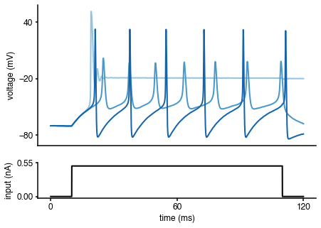
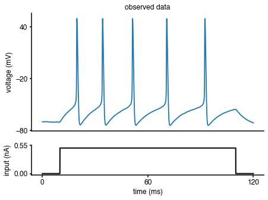
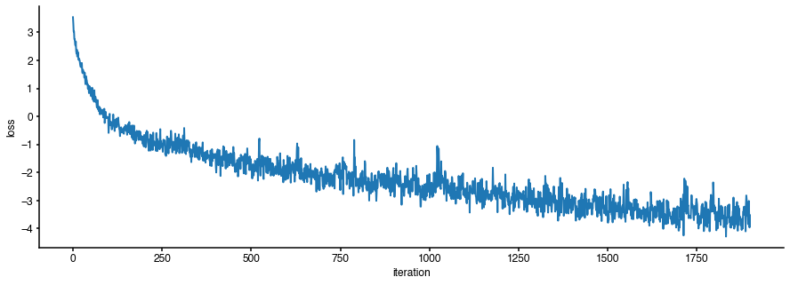
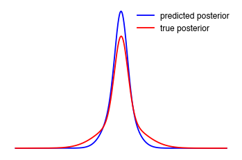
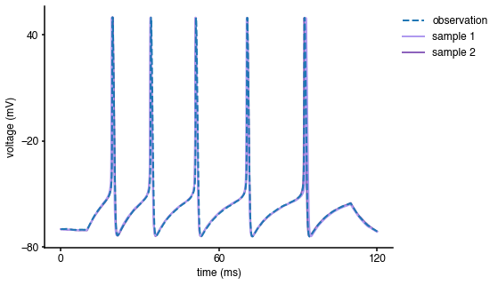

Inference on Hodgkin-Huxley model: tutorial¶
In this tutorial, we use delfi to do inference on a Hodgkin-Huxley model (Hodgkin and Huxley, 1952) with two parameters (\(\bar g_{Na}\),\(\bar g_K\)), given a current-clamp recording (synthetically generated).
Different required components¶
Before running inference, let us define the different required components:
(1) observed data
(2) model
(3) prior over model parameters
(4) summary statistics
(5) generator class.
Observed data¶
Let us assume we current-clamped a neuron and recorded the following voltage trace:

In fact, this voltage trace was not measured experimentally but synthetically generated by simulating a Hodgkin-Huxley model with particular parameters (\(\bar g_{Na}\),\(\bar g_K\)). We will come back to this point later in the tutorial.
Model¶
We would like to infer the posterior over the two parameters (\(\bar g_{Na}\),\(\bar g_K\)) of a Hodgkin-Huxley model, given the observed electrophysiological recording above. The model has channel kinetics as in Pospischil et al. 2008, and is defined by the following set of differential equations (parameters of interest highlighted in orange):

where \(V\) is the membrane potential, \(C_m\) is the membrane capacitance, \(g_{\text{l}}\) is the leak conductance, \(E_{\text{l}}\) is the membrane reversal potential, \(\bar{g}_c\) is the density of channels of type \(c\) (\(\text{Na}^+\), \(\text{K}^+\), M), \(E_c\) is the reversal potential of \(c\), (\(m\), \(h\), \(n\), \(p\)) are the respective channel gating kinetic variables, and \(\sigma \eta(t)\) is the intrinsic neural noise. The right hand side of the voltage dynamics is composed of a leak current, a voltage-dependent \(\text{Na}^+\) current, a delayed-rectifier \(\text{K}^+\) current, a slow voltage-dependent \(\text{K}^+\) current responsible for spike-frequency adaptation, and an injected current \(I_{\text{inj}}\). Channel gating variables \(q\) have dynamics fully characterized by the neuron membrane potential \(V\), given the respective steady-state \(q_{\infty}(V)\) and time constant \(\tau_{q}(V)\) (details in Pospischil et al. 2008).
The input current \(I_{\text{inj}}\) is defined by:
import numpy as np def syn_current(duration=120, dt=0.01, t_on = 10, curr_level = 5e-4, seed=None): t_offset = 0. duration = duration t_off = duration - t_on t = np.arange(0, duration+dt, dt) # external current A_soma = np.pi*((70.*1e-4)**2) # cm2 I = np.zeros_like(t) I[int(np.round(t_on/dt)):int(np.round(t_off/dt))] = curr_level/A_soma # muA/cm2 return I, t_on, t_off, dt, t, A_soma
The Hodgkin-Huxley simulator is given by:
def HHsimulator(V0, params, dt, t, I, seed=None): """Simulates the Hodgkin-Huxley model for a specified time duration and current Parameters ---------- V0 : float Voltage at first time step params : np.array, 1d of length dim_param Parameter vector dt : float Timestep t : array Numpy array with the time steps I : array Numpy array with the input current seed : int """ gbar_Na = params[0,0] # mS/cm2 gbar_Na.astype(float) gbar_K = params[0,1] # mS/cm2 gbar_K.astype(float) # fixed parameters g_leak = 0.1 # mS/cm2 gbar_M = 0.07 # mS/cm2 tau_max = 6e2 # ms Vt = -60. # mV nois_fact = 0.1 # uA/cm2 E_leak = -70. # mV C = 1. # uF/cm2 E_Na = 53 # mV E_K = -107 # mV tstep = float(dt) if seed is not None: rng = np.random.RandomState(seed=seed) else: rng = np.random.RandomState() #################################### # kinetics def efun(z): if np.abs(z) < 1e-4: return 1 - z/2 else: return z / (np.exp(z) - 1) def alpha_m(x): v1 = x - Vt - 13. return 0.32*efun(-0.25*v1)/0.25 def beta_m(x): v1 = x - Vt - 40 return 0.28*efun(0.2*v1)/0.2 def alpha_h(x): v1 = x - Vt - 17. return 0.128*np.exp(-v1/18.) def beta_h(x): v1 = x - Vt - 40. return 4.0/(1 + np.exp(-0.2*v1)) def alpha_n(x): v1 = x - Vt - 15. return 0.032*efun(-0.2*v1)/0.2 def beta_n(x): v1 = x - Vt - 10. return 0.5*np.exp(-v1/40) # steady-states and time constants def tau_n(x): return 1/(alpha_n(x) + beta_n(x)) def n_inf(x): return alpha_n(x)/(alpha_n(x) + beta_n(x)) def tau_m(x): return 1/(alpha_m(x) + beta_m(x)) def m_inf(x): return alpha_m(x)/(alpha_m(x) + beta_m(x)) def tau_h(x): return 1/(alpha_h(x) + beta_h(x)) def h_inf(x): return alpha_h(x)/(alpha_h(x) + beta_h(x)) # slow non-inactivating K+ def p_inf(x): v1 = x + 35. return 1.0/(1. + np.exp(-0.1*v1)) def tau_p(x): v1 = x + 35. return tau_max/(3.3*np.exp(0.05*v1) + np.exp(-0.05*v1)) #################################### # simulation from initial point V = np.zeros_like(t) # voltage n = np.zeros_like(t) m = np.zeros_like(t) h = np.zeros_like(t) p = np.zeros_like(t) V[0] = float(V0) n[0] = n_inf(V[0]) m[0] = m_inf(V[0]) h[0] = h_inf(V[0]) p[0] = p_inf(V[0]) for i in range(1, t.shape[0]): tau_V_inv = ( (m[i-1]**3)*gbar_Na*h[i-1]+(n[i-1]**4)*gbar_K+g_leak+gbar_M*p[i-1] )/C V_inf = ( (m[i-1]**3)*gbar_Na*h[i-1]*E_Na+(n[i-1]**4)*gbar_K*E_K+g_leak*E_leak+gbar_M*p[i-1]*E_K +I[i-1]+nois_fact*rng.randn()/(tstep**0.5) )/(tau_V_inv*C) V[i] = V_inf + (V[i-1]-V_inf)*np.exp(-tstep*tau_V_inv) n[i] = n_inf(V[i])+(n[i-1]-n_inf(V[i]))*np.exp(-tstep/tau_n(V[i])) m[i] = m_inf(V[i])+(m[i-1]-m_inf(V[i]))*np.exp(-tstep/tau_m(V[i])) h[i] = h_inf(V[i])+(h[i-1]-h_inf(V[i]))*np.exp(-tstep/tau_h(V[i])) p[i] = p_inf(V[i])+(p[i-1]-p_inf(V[i]))*np.exp(-tstep/tau_p(V[i])) return np.array(V).reshape(-1,1)
To get an idea of the output of the Hodgkin-Huxley model, let us generate some voltage traces for different parameters (\(\bar g_{Na}\),\(\bar g_K\)), given the input current \(I_{\text{inj}}\):
import matplotlib as mpl import matplotlib.pyplot as plt # input current, time step, time array I, t_on, t_off, dt, t, A_soma = syn_current() # simulate Hodgkin-Huxley model for 3 different parameter sets params = np.array([[[50., 1.]],[[4., 1.5]],[[20., 15.]]]) num_samples = len(params[:,0]) sim_samples = np.zeros((num_samples,len(I))) for i in range(num_samples): sim_samples[i,:] = HHsimulator(V0=-70,params=params[i,:],dt=dt,t=t,I=I,seed=None)[:,0] # colors for traces col_min = 2 num_colors = num_samples+col_min cm1 = mpl.cm.Blues col1 = [cm1(1.*i/num_colors) for i in range(col_min,num_colors)] # plotting %matplotlib inline fig = plt.figure(figsize=(7,5)) gs = mpl.gridspec.GridSpec(2, 1, height_ratios=[4, 1]) ax = plt.subplot(gs[0]) for i in range(num_samples): plt.plot(t,sim_samples[i,:],color=col1[i],lw=2) plt.ylabel('voltage (mV)') ax.set_xticks([]) ax.set_yticks([-80, -20, 40]) ax = plt.subplot(gs[1]) plt.plot(t,I*A_soma*1e3,'k', lw=2) plt.xlabel('time (ms)') plt.ylabel('input (nA)') ax.set_xticks([0, max(t)/2, max(t)]) ax.set_yticks([0, 1.1*np.max(I*A_soma*1e3)]) ax.yaxis.set_major_formatter(mpl.ticker.FormatStrFormatter('%.2f'))

As can be seen, the voltage traces can be quite diverse for different parameter values. How can we infer the parameters (\(\bar g_{Na}\),\(\bar g_K\)) underlying the particular observed voltage trace? delfi will allow us to solve this problem.
In order to run the Hodgkin-Huxley simulator within delfi, we need to define a simulator class linking to the simulator:
from delfi.simulator.BaseSimulator import BaseSimulator class HodgkinHuxley(BaseSimulator): def __init__(self, I, dt, V0, seed=None): """Hodgkin-Huxley simulator Parameters ---------- I : array Numpy array with the input current dt : float Timestep V0 : float Voltage at first time step seed : int or None If set, randomness across runs is disabled """ dim_param = 2 super().__init__(dim_param=dim_param, seed=seed) self.I = I self.dt = dt self.t = np.arange(0, len(self.I), 1)*self.dt self.HHsimulator = HHsimulator self.init = V0 def gen_single(self, params): """Forward model for simulator for single parameter set Parameters ---------- params : list or np.array, 1d of length dim_param Parameter vector Returns ------- dict : dictionary with data The dictionary must contain a key data that contains the results of the forward run. Additional entries can be present. """ params = np.asarray(params) assert params.ndim == 1, 'params.ndim must be 1' hh_seed = self.gen_newseed() states = self.HHsimulator(self.init, params.reshape(1, -1), self.dt, self.t, self.I, seed=hh_seed) return {'data': states.reshape(-1), 'time': self.t, 'dt': self.dt, 'I': self.I.reshape(-1)}
Note that the simulator class simply wraps the simulator function we set up previously. delfi has the flexibility to use simulators that utilize external packages, e.g., Brian (http://briansimulator.org/), nest (https://www.nest-simulator.org/), or NEURON (https://neuron.yale.edu/neuron/). External simulators do not need to be Python-based as long as they store simulation outputs in a format that can be read from Python.
Prior over model parameters¶
Now that we have the model and simulator class, we need to define a function with the prior over the model parameters (\(\bar g_{Na}\),\(\bar g_K\)), which in this case is chosen to be a Uniform distribution:
import delfi.distribution as dd seed_p = 2 prior_min = np.array([.5,1e-4]) prior_max = np.array([80.,15.]) prior = dd.Uniform(lower=prior_min, upper=prior_max,seed=seed_p)
Summary statistics¶
We want to fit a set of summary statistics of the observed data: number of spikes, mean resting potential, standard deviation of the resting potential, and the first 4 voltage moments, mean, standard deviation, skewness and kurtosis. In order to do accomplish that, we define a summary statistics class which computes those quantities:
from delfi.summarystats.BaseSummaryStats import BaseSummaryStats from scipy import stats as spstats class HodgkinHuxleyStats(BaseSummaryStats): """Moment based SummaryStats class for the Hodgkin-Huxley model Calculates summary statistics """ def __init__(self, t_on, t_off, n_mom=4, n_summary=7, seed=None): """See SummaryStats.py for docstring""" super(HodgkinHuxleyStats, self).__init__(seed=seed) self.t_on = t_on self.t_off = t_off self.n_mom = n_mom self.n_summary = np.minimum(n_summary,n_mom + 3) def calc(self, repetition_list): """Calculate summary statistics Parameters ---------- repetition_list : list of dictionaries, one per repetition data list, returned by `gen` method of Simulator instance Returns ------- np.array, 2d with n_reps x n_summary """ stats = [] for r in range(len(repetition_list)): x = repetition_list[r] N = x['data'].shape[0] t = x['time'] dt = x['dt'] t_on = self.t_on t_off = self.t_off # initialise array of spike counts v = np.array(x['data']) # put everything to -10 that is below -10 or has negative slope ind = np.where(v < -10) v[ind] = -10 ind = np.where(np.diff(v) < 0) v[ind] = -10 # remaining negative slopes are at spike peaks ind = np.where(np.diff(v) < 0) spike_times = np.array(t)[ind] spike_times_stim = spike_times[(spike_times > t_on) & (spike_times < t_off)] # number of spikes if spike_times_stim.shape[0] > 0: spike_times_stim = spike_times_stim[np.append(1, np.diff(spike_times_stim))>0.5] # resting potential and std rest_pot = np.mean(x['data'][t<t_on]) rest_pot_std = np.std(x['data'][int(.9*t_on/dt):int(t_on/dt)]) # moments std_pw = np.power(np.std(x['data'][(t > t_on) & (t < t_off)]), np.linspace(3,self.n_mom,self.n_mom-2)) std_pw = np.concatenate((np.ones(1),std_pw)) moments = spstats.moment(x['data'][(t > t_on) & (t < t_off)], np.linspace(2,self.n_mom,self.n_mom-1))/std_pw # concatenation of summary statistics sum_stats_vec = np.concatenate(( np.array([spike_times_stim.shape[0]]), np.array([rest_pot,rest_pot_std,np.mean(x['data'][(t > t_on) & (t < t_off)])]), moments )) sum_stats_vec = sum_stats_vec[0:self.n_summary] stats.append(sum_stats_vec) return np.asarray(stats)
Generator class¶
Now that we have the simulator class, the prior over parameters and the summary statistics class, we need to define a generator class that binds all these objects together:
import delfi.generator as dg # input current, time step I, t_on, t_off, dt, t, A_soma = syn_current() # initial voltage V0 = -70 # seeds seed_m = 1 # summary statistics hyperparameters n_mom = 4 n_summary = 7 # define model, prior, summary statistics and generator classes seed = 3 m = HodgkinHuxley(I, dt, V0=V0, seed=seed_m) s = HodgkinHuxleyStats(t_on=t_on, t_off=t_off, n_mom=n_mom, n_summary=n_summary) g = dg.Default(model=m, prior=prior, summary=s)
Note that delfi allows for the use of multiprocessing tools to parallelise the simulations and increase the speed of simulations. As the simulations typically constitute the major computational burden in SNPE, we suggest the use of parallelisation. In order to accomplish that, we need to decide on the number of parallel processes (according to the computational resources available to the user - here we chose 10 parallel processes), define a list of as many models as the number of processes, and call MPGenerator class instead of Default:
n_processes = 10 seeds_m = np.arange(1,n_processes+1,1) m = [] for i in range(n_processes): m.append(HodgkinHuxley(I, dt, V0=V0, seed=seeds_m[i])) g = dg.MPGenerator(models=m, prior=prior, summary=s)
Coming back to the observed data¶
As mentioned at the beginning of the tutorial, the observed data are generated by the Hodgkin-Huxley model with a set of known parameters (\(\bar g_{Na}\),\(\bar g_K\)). To illustrate how to compute the summary statistics of the observed data, let us regenerate the observed data:
# true parameters and respective labels true_params = np.array([50., 5.]) labels_params = [r'$g_{Na}$', r'$g_{K}$'] # observed data: simulation given true parameters obs = m[0].gen_single(true_params)
Replotting the observed data with the respective current input:
import matplotlib as mpl import matplotlib.pyplot as plt %matplotlib inline fig = plt.figure(figsize=(7,5)) gs = mpl.gridspec.GridSpec(2, 1, height_ratios=[4, 1]) ax = plt.subplot(gs[0]) plt.plot(obs['time'],obs['data']) plt.ylabel('voltage (mV)') plt.title('observed data') ax.set_xticks([]) ax.set_yticks([-80, -20, 40]) ax = plt.subplot(gs[1]) plt.plot(obs['time'],I*A_soma*1e3,'k', lw=2) plt.xlabel('time (ms)') plt.ylabel('input (nA)') ax.set_xticks([0, max(obs['time'])/2, max(obs['time'])]) ax.set_yticks([0, 1.1*np.max(I*A_soma*1e3)]) ax.yaxis.set_major_formatter(mpl.ticker.FormatStrFormatter('%.2f'))

Let us compute the summary statistics of the observed data:
obs_stats = s.calc([obs])
Inference¶
Now that we have all the required components, we can run inference with SNPE. Let us start by defining the inference hyperparameters:
seed_inf = 1 pilot_samples = 2000 # training schedule n_train = 2000 n_rounds = 1 # fitting setup minibatch = 100 epochs = 100 val_frac = 0.05 # network setup n_hiddens = [50,50] # convenience prior_norm = True # MAF parameters density = 'maf' n_mades = 5 # number of MADES
Note that we chose to run SNPE where the density estimator is a masked autoregressive flow (MAF). Another option could have been a mixture of Gaussians (see http://www.mackelab.org/delfi/reference/neuralnet/). We can now run the inference algorithm. Note that this step can take less than one minute to up to one hour depending on the computational resources available and the number of processes defined above:
import delfi.inference as infer # inference object res = infer.SNPEC(g, obs=obs_stats, n_hiddens=n_hiddens, seed=seed_inf, pilot_samples=pilot_samples, n_mades=n_mades, prior_norm=prior_norm, density=density) # train log, _, posterior = res.run( n_train=n_train, n_rounds=n_rounds, minibatch=minibatch, epochs=epochs, silent_fail=False, proposal='prior', val_frac=val_frac, verbose=True,)
Note that we chose the algorithm SNPE-C, but other algorithms are available within delfi (see http://www.mackelab.org/delfi/reference/inference/).
Analysis of the results¶
After running the inference algorithm, let us inspect and analyse the results. We can start by checking whether the algorithm training has converged by inspecting the respective loss function:
fig = plt.figure(figsize=(15,5)) plt.plot(log[0]['loss'],lw=2) plt.xlabel('iteration') plt.ylabel('loss');

It seems that the loss function has converged. Let us inspect the inferred posterior distribution over the parameters (\(\bar g_{Na}\),\(\bar g_K\)):
from delfi.utils.viz import samples_nd prior_min = g.prior.lower prior_max = g.prior.upper prior_lims = np.concatenate((prior_min.reshape(-1,1),prior_max.reshape(-1,1)),axis=1) posterior_samples = posterior[0].gen(10000) ################### # colors hex2rgb = lambda h: tuple(int(h[i:i+2], 16) for i in (0, 2, 4)) # RGB colors in [0, 255] col = {} col['GT'] = hex2rgb('30C05D') col['SNPE'] = hex2rgb('2E7FE8') col['SAMPLE1'] = hex2rgb('8D62BC') col['SAMPLE2'] = hex2rgb('AF99EF') # convert to RGB colors in [0, 1] for k, v in col.items(): col[k] = tuple([i/255 for i in v]) ################### # posterior fig, axes = samples_nd(posterior_samples, limits=prior_lims, ticks=prior_lims, labels=labels_params, fig_size=(5,5), diag='kde', upper='kde', hist_diag={'bins': 50}, hist_offdiag={'bins': 50}, kde_diag={'bins': 50, 'color': col['SNPE']}, kde_offdiag={'bins': 50}, points=[true_params], points_offdiag={'markersize': 5}, points_colors=[col['GT']], title='');

As can be seen, the inferred posterior contains the ground-truth parameters (green) in a high-probability region. Now, let us sample parameters from the posterior distribution, simulate the Hodgkin-Huxley model for each of those samples and compare the simulations with the observed data:
fig = plt.figure(figsize=(7,5)) y_obs = obs['data'] t = obs['time'] duration = np.max(t) num_samp = 2 # sample from posterior x_samp = posterior[0].gen(n_samples=num_samp) # reject samples for which prior is zero ind = (x_samp > prior_min) & (x_samp < prior_max) params = x_samp[np.prod(ind,axis=1)==1] num_samp = len(params[:,0]) # simulate and plot samples V = np.zeros((len(t),num_samp)) for i in range(num_samp): x = m[0].gen_single(params[i,:]) V[:,i] = x['data'] plt.plot(t, V[:, i], color = col['SAMPLE'+str(i+1)], lw=2, label='sample '+str(num_samp-i)) # plot observation plt.plot(t, y_obs, '--',lw=2, label='observation') plt.xlabel('time (ms)') plt.ylabel('voltage (mV)') ax = plt.gca() handles, labels = ax.get_legend_handles_labels() ax.legend(handles[::-1], labels[::-1], bbox_to_anchor=(1.3, 1), loc='upper right') ax.set_xticks([0, duration/2, duration]) ax.set_yticks([-80, -20, 40]);

As can be seen, the samples from the inferred posterior lead to simulations that closely resemble the observed data, confirming that SNPE-C did a good job at capturing the observed data.
References¶
A. L. Hodgkin and A. F. Huxley. A quantitative description of membrane current and its application to conduction and excitation in nerve. The Journal of Physiology, 117(4):500–544, 1952.
M. Pospischil, M. Toledo-Rodriguez, C. Monier, Z. Piwkowska, T. Bal, Y. Frégnac, H. Markram, and A. Destexhe. Minimal Hodgkin-Huxley type models for different classes of cortical and thalamic neurons. Biological Cybernetics, 99(4-5), 2008.